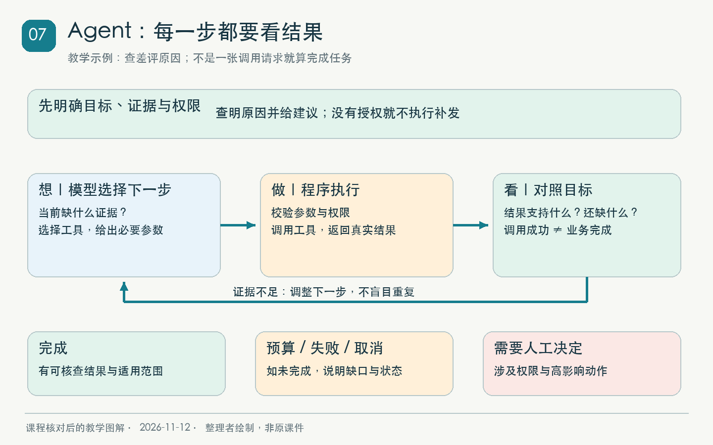

MAP / 先看完整路径
怎样使用
先顺着 1 → 6 看流程，再点击任意步骤进入演示。每步同时看“做什么、留下什么、容易错在哪里、怎样验收”。
流程是便于学习的整理顺序，实际项目可以往返。所有案例、日志和演算均为教学示例，不是你的实际项目成绩。

图为既有笔记的整理者教学示意；本页以操作流程为主。
完整实操 SOP
可以用左右方向键推进。步骤按钮允许回看；没有后台模型调用，演示结束不代表实际验收通过。
CHECK / 先判断，再看解释
模型说“已退款”，能算完成吗？
带走一张实操卡
内容只在当前页，刷新不保存；下载不会提交给老师，也不会改写课程笔记。
ORAL NOTES / 主线外也要记
老师口头补充与游离知识点
- 11/5 01:05:57–01:07:39：模型提调用，程序执行。
- 11/5 01:29:36–01:30:40：停止、上限与人工决定。
- 11/5 02:05:20–02:12:56：偏好不是交易授权，重试前核结果。
沿用已核笔记的来源定位。本次没有重新回听音频；前两周口头内容部分依据录音整理纪要，不冒称逐字原话。完整语境、更多知识点和未核项见下方正文。
来源与公开范围
公开版来源与阅读边界 ↗公开版来源与阅读边界 ↗公开版来源与阅读边界 ↗本页是按任务重组的学习视图；课程语境见按日期归档的笔记；独立正确性核查见上方《权威来源知识核查》，不要用课程笔记本身证明知识正确。平台参数与规则使用前再核。